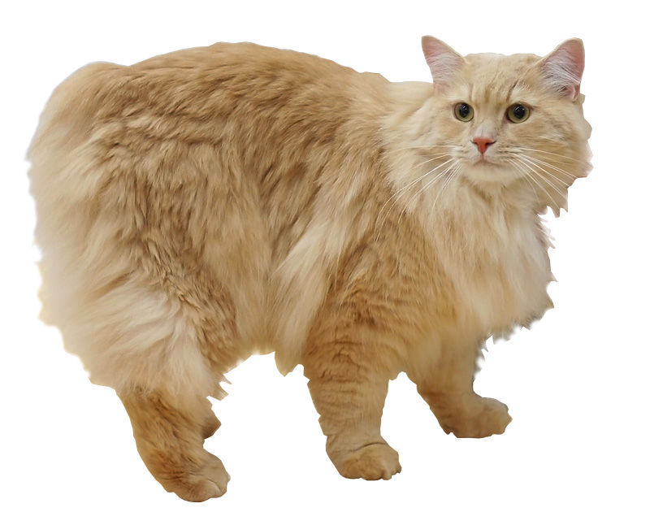

The Cymric (/ˈkɪmrɨk/ kim-rik or /ˈkʌmrɨk/ kum-rik) is a breed of domestic cat. Some cat registries consider the Cymric simply a semi-long-haired variety of the Manx breed, rather than a separate breed. Except for the length of fur, in all other respects the two varieties are the same, and kittens of either sort may appear in the same litter. The name comes from Cymru (Welsh pronunciation: [ˈkəmrɨ]), the indigenous Welsh name of Wales, though the breed is not associated with Wales, and the name was possibly given as an attempt to provide a "Celtic"-sounding name for the breed. The breed's Manx bloodline originated in the Isle of Man, though Canada claims to have developed the long-haired variant. The breed is called the Longhair Manx or a similar name by some registries.
References:
This article uses material from the Wikipedia article "Cymric", which is released under the Creative Commons Attribution-Share-Alike License 3.0.
Picture: By Desaix83, d'après le travail d'Heikki Siltala (http://catza.net/en193321/view/breed/CYM/ 070071/) [CC BY 3.0], via Wikimedia Commons
{kind=link}